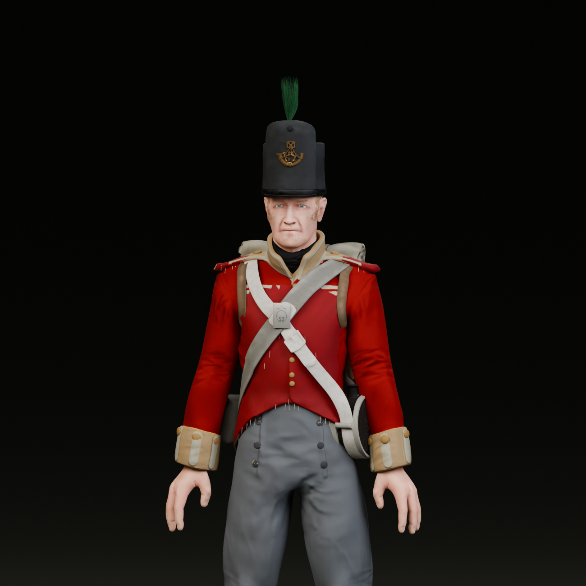
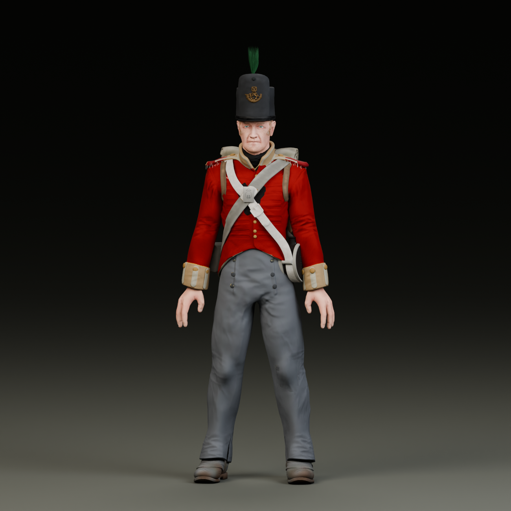
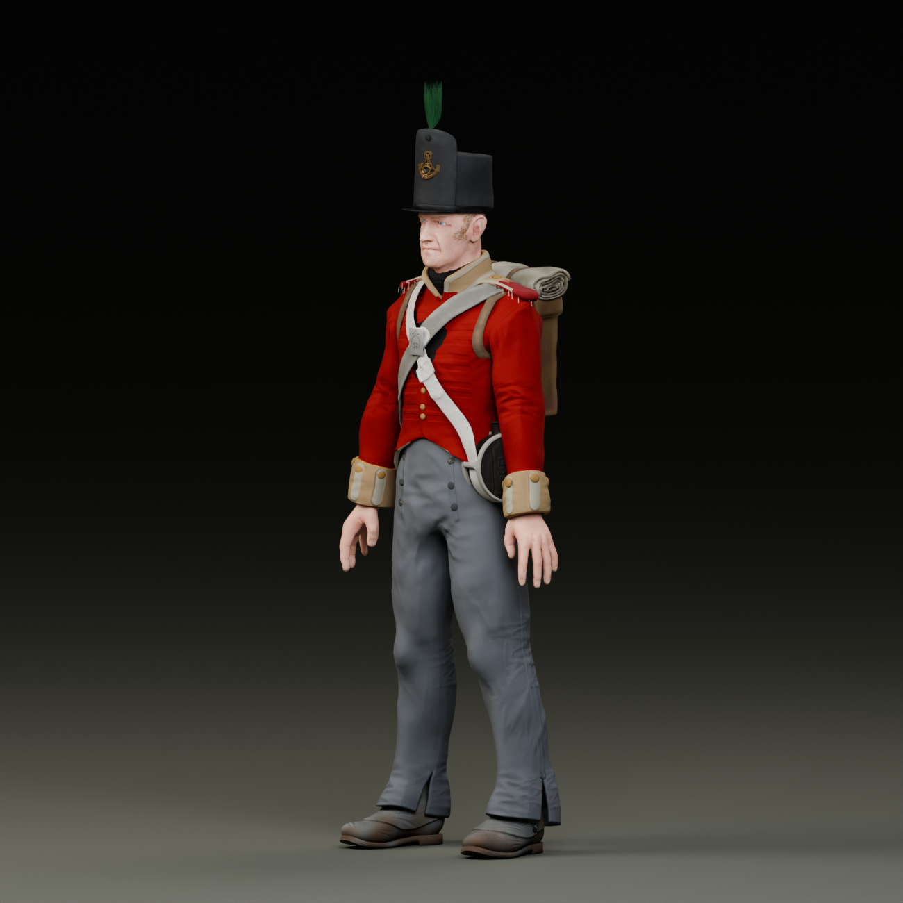
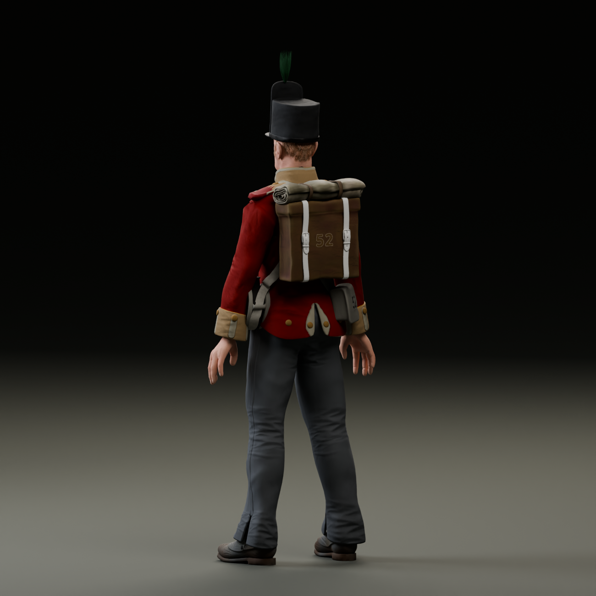
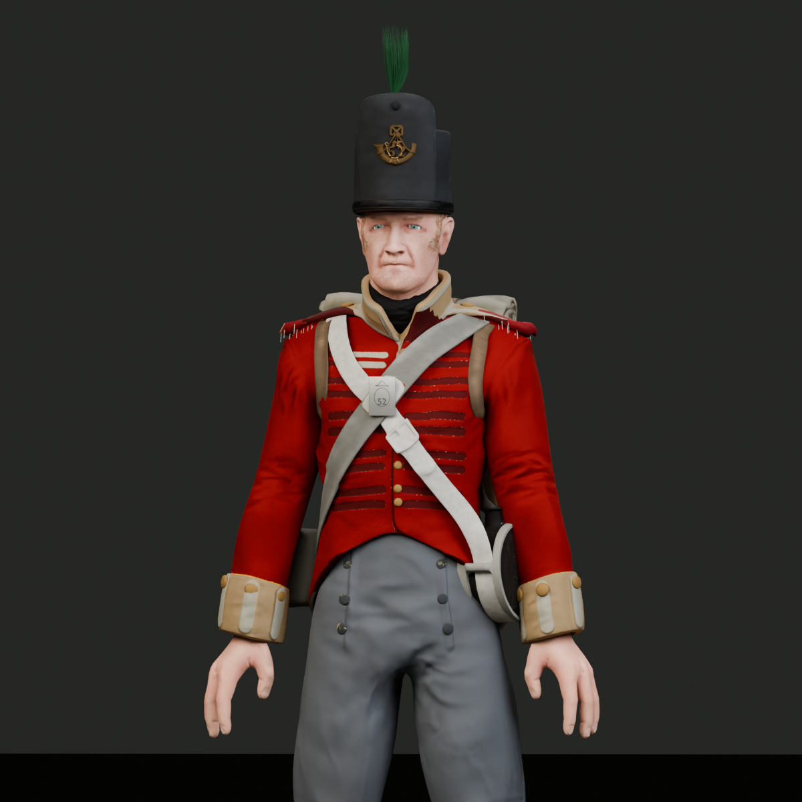

Portrait
Portrait view of the adapted 52nd Light Infantry private


Front view
Full uniform and equipment from the front


Three-quarter view
The complete figure from a three-quarter angle


Rear view
Pack, straps, and rear uniform details


Uniform detail
Close view of the scarlet coat, facings, lace, and crossbelts